deutschoderwas · Sprechclub · Mittwoch, 9. September · Einzelstunde
Besuch und Einladung
Du bist eingeladen. Wann kommst du, was bringst du mit, und was sagst du an der Tür? Heute üben wir den ganzen Abend — vom Klingeln bis zum Mantel.
Dein Niveau
Gleiches Thema, andere Sätze. Wechsle jederzeit — probier ruhig beides.
Es klingelt. Der Besuch ist da.
Schaut euch das Bild an. Was sagt die Person an der Tür als Erstes — und was antwortet die andere?
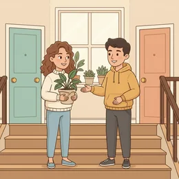
Bekommst du oft Besuch? Wen?
Was bringst du mit, wenn du eingeladen bist?
Kommst du lieber pünktlich oder ein bisschen später?
Wie lädt man in deinem Land ein — mündlich, per Nachricht, mit Karte? Und wie verbindlich ist das?
Was ist bei euch ein passendes Gastgeschenk, und was wäre peinlich?
Woran merkst du als Gast, dass der Abend zu Ende ist?
🗣️ Sprecht reihum: „Zuletzt war ich eingeladen bei …“ · „Ich habe … mitgebracht.“ · „Am Anfang habe ich gesagt: …“
In Deutschland fängt der Abend an der Tür an
Begrüßen, Mantel abgeben, Blumen überreichen, Schuhe — ja oder nein? Diese ersten zwei Minuten haben feste Sätze. Die üben wir heute.
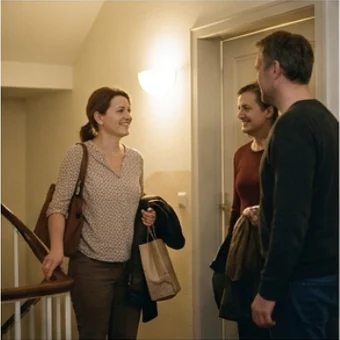
Zieht man bei euch die Schuhe aus? Und was macht man, wenn man es nicht weiß?
Wann sagt man „du“ und wann „Sie“, wenn man neue Leute kennenlernt?
Was sagst du, wenn dir das Essen nicht schmeckt?
👀 Zu zweit: Stellt euch gegenüber und spielt nur die ersten dreißig Sekunden — klingeln, öffnen, begrüßen, Blumen. Dann tauschen. Kurz, aber jedes Mal anders.
Zwölf Wörter für einen Abend zu Gast
Sagt jedes Wort laut — und gleich den Beispielsatz hinterher. Erst dann bleibt es hängen.
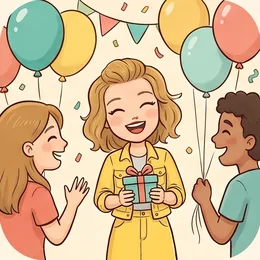
die Einladung
„Vielen Dank für die Einladung!“
💡 jemanden einladen zu etwas. Und Achtung: Wer einlädt, bezahlt oft auch — im Restaurant heißt „ich lade dich ein“ genau das.
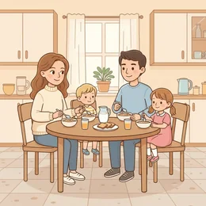
der Gast
„Wir haben heute Abend Gäste.“
💡 Plural: die Gäste. Der Gegenpart heißt der Gastgeber oder die Gastgeberin.
vorbeikommen
„Komm doch am Samstag mal vorbei!“
💡 Trennbar und sehr locker. Für Freunde perfekt — für die Chefin sagt man lieber „Kommen Sie uns gern besuchen“.
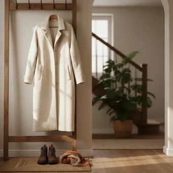
die Garderobe
„Den Mantel kannst du an die Garderobe hängen.“
💡 Die Garderobe ist der Ort im Flur für Mäntel und Jacken. Der Gastgeber sagt fast immer: „Gib mir deine Jacke.“
💐
das Gastgeschenk
„Als Gastgeschenk bringt man Blumen, Wein oder etwas Süßes mit.“
💡 Blumen werden ohne Papier überreicht — das Papier nimmt man vorher ab. Bei Wein passt: „Nur eine Kleinigkeit.“
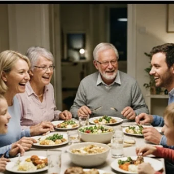
anstoßen
„Lasst uns anstoßen — auf euch!“
💡 Trennbar. Man schaut sich dabei in die Augen, sonst gilt es als unhöflich. Dazu sagt man Prost oder zum Wohl.
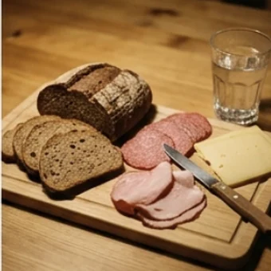
das Abendbrot
„Bei uns gibt es abends meistens nur Abendbrot.“
💡 Typisch deutsch: Brot, Käse, Wurst — kalt. Wer zum Abendbrot einlädt, kocht nicht unbedingt.
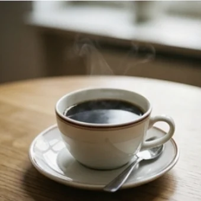
nachschenken
„Darf ich dir noch etwas nachschenken?“
💡 Trennbar. Als Gast antwortet man entweder „gern“ oder „danke, ich habe noch“ — nie einfach nur „nein“.
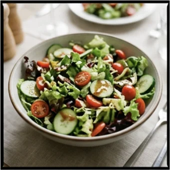
zugreifen
„Greif ruhig zu, es ist genug da!“
💡 Trennbar. Der Gastgeber sagt es, der Gast antwortet: „Danke, sehr gern.“ Wörtlich: mit der Hand nehmen.
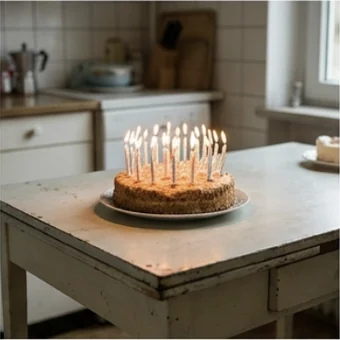
der Anlass
„Zu welchem Anlass ist die Einladung — Geburtstag oder einfach so?“
💡 Der Anlass ist der Grund für ein Fest. aus diesem Anlass, ohne besonderen Anlass.
🕕
absagen
„Ich muss leider absagen, mir geht es nicht gut.“
💡 Trennbar. Gegenteil: zusagen. Absagen tut man so früh wie möglich — und immer mit einem Grund.
👋
sich verabschieden
„Wir verabschieden uns langsam, es ist schon spät.“
💡 Reflexiv: sich verabschieden von jemandem. Das Signal zum Aufbrechen: „Wir wollen euch nicht länger aufhalten.“
💡 Spiel: Verdeckt die Wörter und deckt sie einzeln auf. Wer eine Karte trifft, sagt einen Satz, den man an dem Abend wirklich sagt.
Drei Wörter, die fast dasselbe heißen
Erst die drei Fälle, die man leicht verwechselt. Darunter drei Sätze richtig und falsch nebeneinander.
🎉
die Party
Viele Leute, Musik, oft am Wochenende.
Am Samstag ist bei Timo eine Party.
🍰
die Feier
Ein Anlass steht dahinter: Geburtstag, Hochzeit, Abschied.
Zu meiner Feier kommen nur zwölf Leute.
☕
der Besuch
Zwei bis vier Personen, meistens am Nachmittag.
Wir bekommen am Sonntag Besuch.
✅ So sagt man es
Vielen Dank für die Einladung!
Warum das passtDer Dank kommt an der Tür, nicht erst beim Gehen. Und er kommt vor dem Gastgeschenk.
❌ So nicht
Danke, dass du mich eingeladen hast, das war wirklich sehr, sehr nett von dir, ich weiß gar nicht …
Das ProblemZu lang für die Türschwelle. Ein Satz reicht — der Rest kommt beim Essen.
✅ So sagt man es
Soll ich die Schuhe ausziehen?
Warum das passtIn Deutschland ist es sehr unterschiedlich. Fragen ist nie falsch — einfach anbehalten manchmal schon.
❌ So nicht
Bei uns zieht man immer die Schuhe aus.
Das ProblemKlingt wie eine Belehrung. Als Gast fragt man, als Gastgeber sagt man Bescheid.
✅ So sagt man es
Wir wollen euch nicht länger aufhalten — es war ein schöner Abend.
Warum das passtDas ist die feste Formel fürs Aufbrechen. Sie gibt beiden Seiten einen freundlichen Ausgang.
❌ So nicht
So, ich gehe jetzt.
Das ProblemNicht falsch, aber schroff. Zum Abschied gehören zwei Sätze: einer zum Gehen, einer zum Danken.
Drei Faustregeln, die in Deutschland fast immer stimmen:
Zeit: Zum Essen pünktlich, zur Party ruhig eine halbe Stunde später. Zu früh ist unangenehmer als zu spät.
Mitbringen: Blumen, Wein oder etwas Süßes. Bei „bring nichts mit“ bringt man trotzdem eine Kleinigkeit.
Fragen: „Kann ich etwas mitbringen?“ ist immer richtig — und die Antwort „einen Nachtisch“ ist ernst gemeint.
Und wenn du unsicher bist: Frag beim Zusagen gleich mit. Das gilt als aufmerksam, nicht als umständlich.
⚖️ Kurzübung: Jeder sagt einen Satz für zusagen, einen für absagen und einen für nachfragen. Die Gruppe entscheidet, welcher am freundlichsten klingt.
Die vier Momente, die immer kommen
Zusagen, ankommen, bei Tisch, verabschieden. Für jeden Moment gibt es Sätze, die man auswendig kann — dann muss man nicht mehr nachdenken.
1 · ✅ Zusagen Ja, sehr gern!Da komme ich gern.Kann ich etwas mitbringen?
So klingt esSehr gern! Kann ich etwas mitbringen?
2 · 🚪 An der Tür Guten Abend!Danke für die Einladung.Das ist für dich.Soll ich die Schuhe ausziehen?
So klingt esDanke für die Einladung — das hierist für dich.
3 · 🍽️ Bei Tisch Guten Appetit!Das schmeckt sehr gut.Darf ich noch etwas haben?Danke, ich bin satt.
So klingt esDasschmeckt wirklich gut — darf ich noch etwas haben?
4 · 👋 Zum Abschied Es war sehr schön.Vielen Dank für alles!Wir sehen uns bald.Kommt uns auch mal besuchen!
So klingt esVielen Dank für alles — es war ein richtig schöner Abend.
1 · ✅ Zusagen mit Rückfrage Da sind wir gern dabei.Passt es euch auch etwas später?Sollen wir einen Nachtisch übernehmen?
So klingt esDa sind wir gern dabei — sollen wir den Nachtisch übernehmen?
2 · 🚪 An der Tür, etwas gewählter Schön, dass wir uns kennenlernen.Eine Kleinigkeit für Sie.Wir haben uns auf heute Abend gefreut.
So klingt esEine Kleinigkeit für Sie — wir haben uns auf heute Abendgefreut.
3 · 🍽️ Bei Tisch, mit Fingerspitzengefühl Das Rezept müsstest du mir verraten.Ich nehme gern noch, es ist wirklich gut.Ich vertrage leider keine Nüsse.
So klingt esDas Rezeptmüsstest du mir unbedingt verraten.
4 · 👋 Aufbrechen, ohne zu stören Wir wollen euch nicht länger aufhalten.Langsam sollten wir los.Das nächste Mal bei uns!
So klingt esWir wollen euch nicht längeraufhalten — das nächste Mal bei uns!
Verb das, was du mitbringst Zeit und Menge Höflichkeit
🗣️ Sofort anwenden: Spielt den ganzen Abend in vier Sätzen durch — zusagen, ankommen, bei Tisch, verabschieden. Einer sagt, der andere antwortet. Dann tauschen.
Vier Szenen — zwei Runden
Runde 1: Lest den Dialog zu zweit laut. Runde 2: Auf den Knopf tippen — B verschwindet, und ihr antwortet selbst. Die Regieanweisung bleibt als Hilfe stehen.
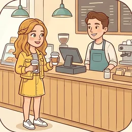
Dialog 1 · „Die Einladung“
Ihr steht nach dem Kurs zusammen. Deine Mitschülerin lädt dich ein.
A
Sag mal, hast du Samstagabend schon was vor? Wir grillen bei uns auf dem Balkon.
B
Oh, sehr gern! Um wie viel Uhr soll ich denn da sein?
🗣️ Sag freundlich zu und frag gleich nach der Uhrzeit.tippen = Hilfe zeigen
A
So ab sieben. Es wird ganz gemütlich, nur fünf Leute.
B
Klingt schön. Kann ich etwas mitbringen — einen Salat vielleicht?
🗣️ Frag, ob du etwas mitbringen kannst, und mach gleich einen Vorschlag.tippen = Hilfe zeigen
A
Wenn du magst, gern. Wir haben Fleisch und Brot.
B
Dann bringe ich einen Salat und etwas zu trinken mit. Bis Samstag!
🗣️ Fass zusammen, was du mitbringst, und verabschiede dich kurz.tippen = Hilfe zeigen
Dialog 2 · „An der Tür“
Samstag, zehn nach sieben. Du klingelst mit Blumen in der Hand.
A
Da bist du ja! Komm rein, komm rein.
B
Guten Abend! Vielen Dank für die Einladung — das hier ist für dich.
🗣️ Grüße, danke, überreiche die Blumen. Alles in einem Satz.tippen = Hilfe zeigen
A
Oh, wie schön! Das wäre doch nicht nötig gewesen.
B
Nur eine Kleinigkeit. Soll ich die Schuhe ausziehen?
🗣️ Wehr das Lob leicht ab und frag nach den Schuhen.tippen = Hilfe zeigen
A
Nein, lass sie ruhig an. Gib mir deine Jacke, ich hänge sie auf.
B
Danke. Ihr habt es aber gemütlich hier!
🗣️ Bedanke dich kurz und sag etwas Nettes über die Wohnung.tippen = Hilfe zeigen
A
Danke! Komm, die anderen sind schon auf dem Balkon.
Dialog 3 · „Bei Tisch“
Alle sitzen. Es gibt Salat, Fleisch und Brot — und eine Nachfrage, die du nicht erwartet hast.
A
So, greift zu! Guten Appetit.
B
Guten Appetit! Das sieht wirklich gut aus.
🗣️ Wünsche zurück und sag etwas zum Essen.tippen = Hilfe zeigen
A
Magst du auch von der Soße? Da ist Sahne drin.
B
Danke, lieber nicht — ich vertrage keine Milchprodukte.
🗣️ Lehn freundlich ab und nenn den Grund in einem halben Satz.tippen = Hilfe zeigen
A
Oh, das wusste ich gar nicht. Ist das ein Problem mit dem Rest?
B
Überhaupt nicht, der Salat ist perfekt. Darf ich noch etwas Brot haben?
🗣️ Beruhige und frag höflich nach etwas anderem.tippen = Hilfe zeigen
A
Klar, nimm dir!
Dialog 4 · „Der Abschied“
Halb zwölf. Du möchtest gehen, ohne dass es unhöflich wirkt.
A
Noch einen Espresso? Ich mache gern noch einen.
B
Danke, für mich nicht mehr — wir wollen euch nicht länger aufhalten.
🗣️ Lehn ab und leite mit der festen Formel zum Aufbruch über.tippen = Hilfe zeigen
A
Ach, es ist doch noch früh!
B
Morgen früh muss ich leider raus. Es war ein richtig schöner Abend.
🗣️ Nenn einen kurzen Grund und lob den Abend.tippen = Hilfe zeigen
A
Das freut mich. Schön, dass ihr da wart.
B
Vielen Dank für alles. Das nächste Mal bei uns!
🗣️ Danke noch einmal und lade zurück ein — so bleibt die Tür offen.tippen = Hilfe zeigen
A
Sehr gern. Kommt gut nach Hause!
🎭 Und jetzt ihr: Spielt den ganzen Abend am Stück — Einladung, Tür, Tisch, Abschied — in vier Minuten. Wer das schafft, schafft es auch im echten Leben.
🧩 Wohin damit? Wechselpräpositionen
An die Garderobe oder an der Garderobe? Beim Besuch geht ständig etwas irgendwohin — und genau da entscheidet sich Akkusativ oder Dativ.
Neun Präpositionen können beides: an, auf, hinter, in, neben, über, unter, vor, zwischen. Die Frage wohin? verlangt den Akkusativ (eine Bewegung mit Ziel), die Frage wo? verlangt den Dativ (ein Ort ohne Bewegung). Nicht das Verb entscheidet allein — die Frage entscheidet.
➡️Wohin?Ich hänge die Jacke an die Garderobe. (Akkusativ)
▾
📍Wo?Die Jacke hängt an der Garderobe. (Dativ)
▾
➡️Wohin?Stell die Blumen auf den Tisch. (Akkusativ)
▾
📍Wo?Die Blumen stehen auf dem Tisch. (Dativ)
SubjektIch
Verbhänge
Was?die Jacke
Wohin? (Akkusativ)an die Garderobe.
Die Verbpaare, die dazugehören
Zu jeder Bewegung gehört ein Ruheverb. Wer die Paare kennt, muss nicht mehr überlegen.
🫙
stellen ⇄ stehen
Etwas Aufrechtes: Flasche, Vase, Teller
Stell die Flasche auf den Tisch. ⇄ Sie steht auf dem Tisch.
📄
legen ⇄ liegen
Etwas Flaches: Besteck, Papier, Serviette
Leg die Serviette neben den Teller. ⇄ Sie liegt neben dem Teller.